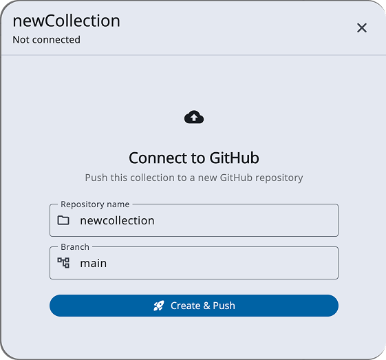
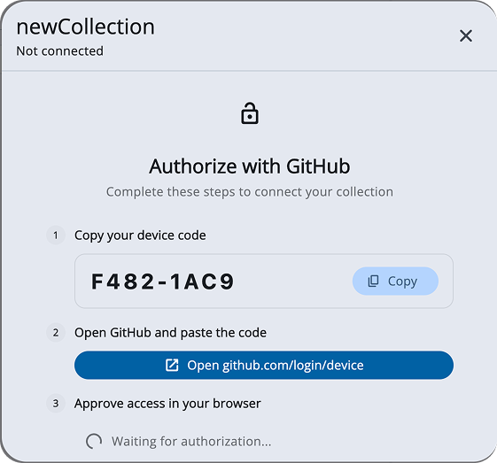
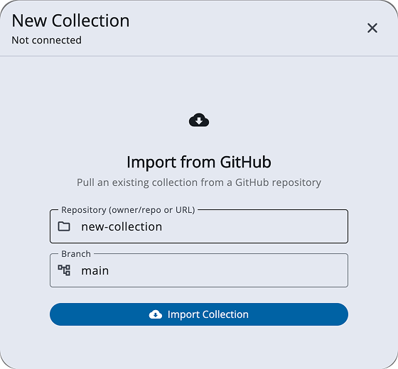
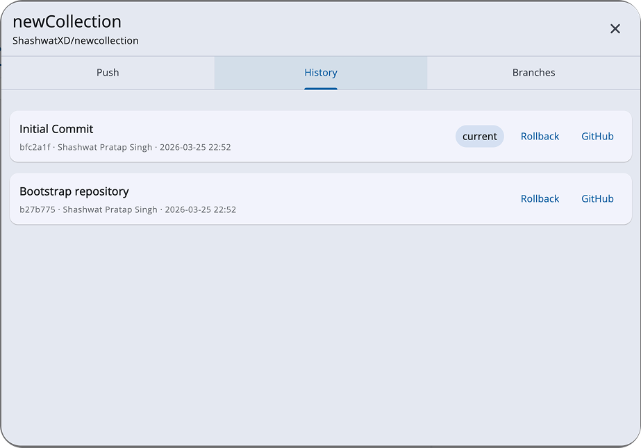
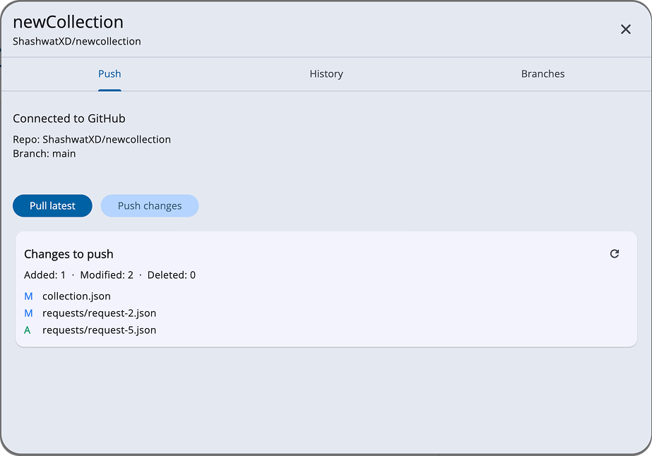
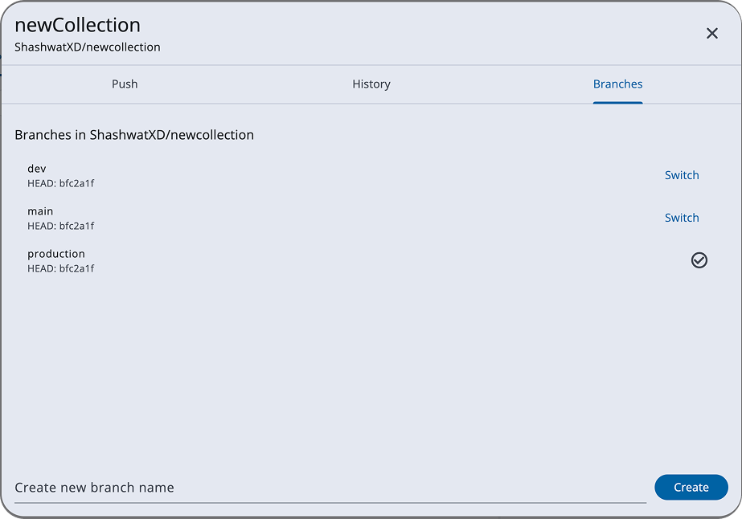
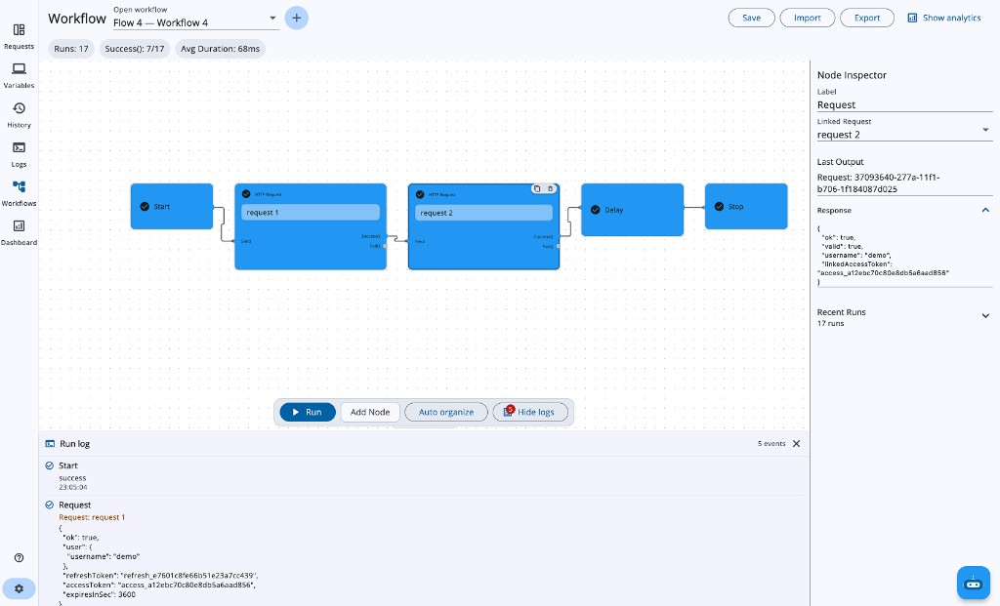
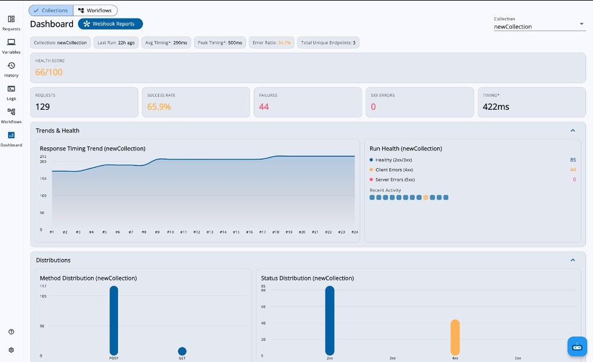
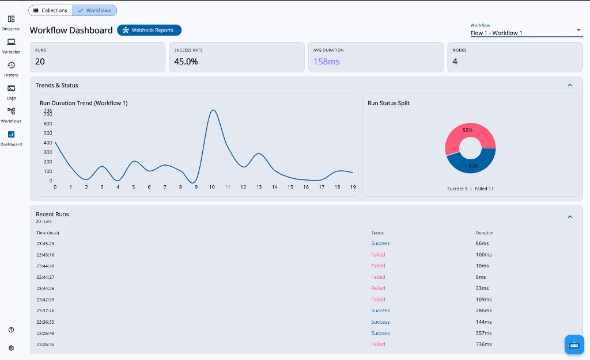

Short answers to the following questions (Add relevant links wherever you can):
API Dash is my first open source project, and these contributions have been my initial experience with open source. Below are some of my contributions.
My merged contributions:
Ongoing contributions under review:
The project I am most proud of is XDriven, where app UI and features are rendered dynamically from the backend.
It solves a real problem with Play Store/App Store updates. Instead of releasing a new version for every change, updates and A/B testing can be done directly from the backend, and the app reflects them on restart.
This project helped me understand Server Driven UI (SDUI) and build a more flexible and scalable system.
Github: XDriven-App
I am most motivated by problems where I can add real value to a product and improve user experience.
I focus on making features simple to use, intuitive, and clear so that users can easily understand what each feature does without confusion. I enjoy working on problems where usability and real world impact matter.
I will not be working full time during the initial phase due to college classes. However, I will be consistently dedicating time every day to ensure steady progress.
From 10-June-2026 onwards, during my summer break, I will be able to work full time and focus completely on the project.
Absolutely not. Regular sync ups with mentors is something I genuinely look forward to. Being able to discuss my approach, get feedback, and improve in real time is one of the main reasons I am applying for this project.
I am comfortable joining calls whenever needed and believe clear and regular communication is important to build something meaningful.
What interested me the most about API Dash is how it is doing something unique in the developer tools space using Flutter.
As someone who enjoys working with Flutter, finding a serious Dart based project and contributing to it has been a very special experience for me. It gave me the opportunity to work on a real product and understand how things are built at scale.
I am particularly motivated by the idea of contributing to the Flutter ecosystem and creating something that developers actually use. Being able to bring meaningful impact in this space is something I truly value.
One area of improvement is the lack of a proper dashboard to track API performance. Users should be able to see metrics like success rate, failures, and latency in one place to quickly identify issues.
Another improvement is around collaboration and sharing. Currently, there is no simple way to share APIs or progress with others, and most data is stored locally. Adding better sharing and collaboration support would make the tool more useful in team environments.
Yes, I have been actively involved with the API Dash community through both GitHub and Discord.
On GitHub, I have participated in discussions and shared ideas on multiple issues:
I have helped other contributors on Discord to navigate through issues, explain issues, and help people make their first contributions. I've also helped with onboarding people.
Git Support, Visual Workflow Builder & Collection Dashboard
API Dash currently stores all requests in a flat local list with no version control, no sharing, and no collaboration support. The storage layer uses a Load All / Save All model with manual save, which blocks any collection or sync feature. This project first refactors the storage to request-level autosave, then introduces three features: Git Support for version-controlling and sharing collections via GitHub, a Visual Workflow Builder for chaining multi-step API flows, and a Dashboard for visualizing API health and workflow metrics.
Prototype: A working prototype has been submitted as PR #1451 with a video walkthrough.
Relevant Issues & Discussions:
Problem:
API Dash stores all data locally in Hive. There is no way to version-control requests, share collections with teammates, or roll back to a previous state. For teams, this means manually exporting and importing API collections, which is error-prone and fragile.
Before Git support or collections can work, the storage layer needs to change. Today the app uses a Load All / Save All model: dataBox is a regular Hive Box that loads every request into memory at startup, and saveData() re-serializes the entire map back to Hive when the user clicks Save. Every mutation calls unsave() which only sets a dirty flag, nothing is persisted until the manual save.
This breaks Git support in two ways:
The fix is a Lazy Load / Granular Save architecture: change dataBox from Box to LazyBox, load only request metadata (id, name, method, URL) at startup, load full request data on demand when the user opens a request, and save each individual request to Hive immediately on every change (debounced). This approach updates CollectionStateNotifier to call hiveHandler.setCollectionRequestModel() directly on each mutation instead of bulk-saving.
This autosave refactoring is the first deliverable of GSoC and unblocks everything else.
Design Principle:
Hive remains the single source of truth. There are no local Git repositories, no on-disk files to sync, no file watchers. Everything goes through the GitHub REST API over HTTPS. This means Git Support works identically on macOS, Windows, Linux, Android, iOS, and web.
Why a serialization layer is needed:
Hive stores data in a proprietary binary format that is not human-readable or diffable. Every request is serialized to clean JSON before push, and deserialized on pull or rollback. GitHub sees readable JSON files; the app keeps using Hive locally.
Architecture:
┌─────────────────┐ serialize ┌──────────────────────┐
│ Hive (SSOT) │ ─────────────────→ │ JSON Files │
│ dataBox (Lazy) │ │ collection.json │
│ environmentBox │ ←───────────────── │ requests/*.json │
└─────────────────┘ deserialize │ environments.json │
│ autosave on └──────────┬───────────┘
│ every mutation │ GitHub REST API
│ ┌───────────▼───────────┐
└────────────────────────── │ GitHub Repository │
(granular per-request save) │ blob → tree → commit │
│ → update ref │
└───────────────────────┘
CollectionModel: Introducing the Collection Concept
Currently all requests live in a flat Map inside CollectionStateNotifier. Once autosave is in place, the next step is introducing a CollectionModel that groups requests into named collections. Each collection maps to one GitHub repository.
class CollectionModel {
final String id;
final String name;
final String description;
final List<String> requestIds;
final String? activeEnvironmentId;
final GitConnectionModel? gitConnection; // owner, repo, branch, lastSyncedCommitSha
}
How it works in the UI:
A collection dropdown sits above the sidebar's request list. Each collection has a GitHub icon button with two states:
github.com/login/device. User enters the code, authorizes, and the app picks up the token. API Dash creates the repo, serializes requests to JSON, and pushes the first commit.GitHub API Adapter: Technical Implementation
A GitHubApiAdapter class handles all GitHub communication:
/login/device/code endpoint, receives a short user code, and opens github.com/login/device. User enters the code, authorizes, and the app polls until it receives an access token. Token stored in fluttersecurestorage. One-time setup, all later operations use the saved token. Scopes: repo + workflow./git/blobs/git/trees/git/commits/git/refs/heads/{branch}This is a single atomic operation, either the entire commit succeeds or nothing changes.
The implementation will build a local Git file snapshot from Hive (collection.json, environments.json, requests/*.json) and use a SHA-first diff strategy against the remote branch tree. It will first compare path-level tree/blob SHAs and fetch full file content only for candidate changed files. Final change type is computed as:
addeddeletedmodifiedThis result powers the "Changes to push" preview card before commit.
lastSyncedCommitSha with remote HEAD. If they differ, someone else pushed. Show a conflict dialog with options to pull first or view commits.Serialization Layer: GitCollectionSerializer
Converts Hive data to/from Git-friendly JSON files:
collection.json - collection metadata and request orderrequests/{slug}.json - individual request files (human-readable slugified names)environments.json - all environments with variable valuesHandles edge cases: malformed request files are skipped with warnings, request order is preserved, duplicate names get suffixed.
Import from GitHub:
This is how collaboration starts. A teammate shares a GitHub repo URL, and the user imports it as a new collection. The user pastes the repo (e.g., owner/repo-name or a full URL) and optionally picks a branch. The app fetches the tree from that branch via the GitHub API, downloads the JSON blobs, deserializes them through GitCollectionSerializer, and creates a new local collection already linked to that repo. From that point on, the user can push their own changes and pull updates from others.
The key insight: the user never thinks about blobs, trees, or API calls. They think about their collection. GitHub is just a button that lets them share it, version it, and roll back with one click.
Usage: Git Support UI






Problem:
Testing multi-step API flows today requires writing scripts or manually sequencing requests. There is no visual way to compose, connect, and execute chained API workflows, inspect intermediate results, or conditionally branch based on responses.
Design Principle:
The workflow builder is a new section in the navigation rail (alongside Requests and Dashboard). It uses a node-based canvas where users visually compose API workflows by connecting nodes with edges. Each workflow is a directed acyclic graph (DAG) that the engine walks at runtime. The official idea also mentions Agentic AI for generating workflows from prompts, this will be integrated through DashBot.
AI Integration Plan (DashBot -> Workflow Graph):
AI is implemented as an assisted scaffold step, not a replacement for manual editing. The user opens "Generate with AI" in DashBot, writes a prompt such as "Create login -> fetch profile -> update profile flow", and DashBot uses the currently configured available model to generate a workflow draft constrained by the internal workflow schema. The JSON draft is an internal transport format and is not shown as the primary user experience.
The generation pipeline:
Node Types (6 types):
json:data.access_token and store it as authToken). Key data: linkedRequestId, linkedCollectionId, requestVariableValues, variableExtractionsconditionExpression (e.g., status>=200&&status<300, var:myFlag)delayMsloopExpression (e.g., var:items)WorkflowNodeData: The Node Data Model
Each node carries a WorkflowNodeData object with all its configuration. Request nodes link to actual RequestModel instances from collections, enabling reuse of existing API requests in workflows.
class WorkflowNodeData {
final WorkflowNodeType nodeType;
final String label;
final String? linkedRequestId; // For Request nodes
final String? conditionExpression; // For Condition nodes
final int? delayMs; // For Delay nodes
final String? loopExpression; // For Loop nodes
final Map<String, String>? requestVariableValues;
final Map<String, String>? variableExtractions;
}
Execution Engine: WorkflowExecutionService
The engine validates the graph (exactly 1 Start, at least 1 End, no cycles, all nodes reachable, condition nodes have both branches connected), then performs a BFS walk:
variableExtractions is set, pulls values from the response JSON and saves them as context variables for downstream nodes to useShared Context: Data Passing Between Nodes
A WorkflowExecutionContext holds two maps: variables (user-set key-value pairs) and results (per-node response data). Nodes downstream can read values set by upstream nodes via the json: syntax. For example, a Request node with variableExtractions: {"authToken": "json:data.access_token"} sends the HTTP request, then extracts the token from the response body and stores it as authToken in the context. The next Request node can then use {{authToken}} in its headers or body.
Canvas UI:
The canvas uses vyuhnodeflow for node rendering, drag-and-drop positioning, and port-based connections. Key UI features:
Usage: Workflow Builder

Problem:
API Dash has no unified view of how your API collections are performing. Users cannot see success rates, failure patterns, response time trends, or status code distributions without manually checking each request's history individually. The official idea also asks for automated reports via Webhooks.
Design Principle:
The dashboard is a new section in the navigation rail that aggregates data from request history and workflow run history stored in Hive. It provides two views: Collection Dashboard (API health metrics) and Workflow Dashboard (workflow run analytics). Both support webhook-based automated reporting.
Collection Dashboard: What it shows
Workflow Dashboard: What it shows
Webhook Reporting Service:
Both dashboards have a "Webhook Reports" button that opens a dialog with:
The report payload is JSON:
{
"reportName": "Collection Health Report",
"generatedAt": "2026-03-25T17:00:00Z",
"collection": {
"id": "...",
"name": "Payment API",
"totalRequests": 42,
"successRate": 0.952,
"failures": 2,
"healthScore": 87
}
}
Usage: Dashboard UI


For more related designs see Figma.
Project Size: Medium (175 hours, 12 weeks)
GSoC 2026 Timeline for reference.
Community Bonding Period (May 1 - May 24)
My goals for bonding are to learn more about the project and to gel with the team. I plan to focus on core architecture conversation so I can complete the technical design and put everyone's concerns to rest prior to development.
Highest priority since autosave changes the core storage layer, and Git involves external GitHub API, OAuth device flow, and end-to-end sync.
Box to LazyBox migration with backward compatibility (detect old format, convert on first launch). Replace every unsave() call in CollectionStateNotifier with immediate per-request hiveHandler.setCollectionRequestModel(). Add debounced save (2s after last keystroke) to avoid excessive disk writes during rapid editing. Remove the manual save feature. Add a subtle "Saving..." / "Saved" indicator in the UI. Finalize CollectionModel, collection dropdown UI, collection CRUD (create, rename, delete), multi-collection navigation.Deliverable: App autosaves every request change immediately. Opening with old-format data migrates seamlessly. Users can create, rename, switch, and delete named collections in the sidebar.
GitHubApiAdapter hardening, atomic push flow, push preview UI showing added/modified/deleted requests.Deliverable: A user can authenticate with GitHub via Device Flow and push a collection as JSON to a new repo in one click.
Deliverable: A user can pull remote changes, roll back to any previous commit, and switch branches, all from the Git panel.
GitCollectionSerializer schema versioning, unit tests for all git services using mock HTTP client.Deliverable: Git Support is tested end-to-end against a real GitHub repo. Conflict detection warns before overwriting remote changes. Unit tests cover push, pull, rollback, and branch operations.
WorkflowModel + WorkflowNodeData finalization, canvas integration, all 6 node types with inspector panel.Deliverable: Users can add all 6 node types to the canvas, connect them via ports, and edit properties in the inspector panel.
WorkflowExecutionService BFS engine, WorkflowRunDelegateBridge for real HTTP request execution, shared context and variable extraction via json: syntax.Deliverable: Workflows execute real HTTP requests. Responses are stored in shared context and downstream nodes can extract values (e.g., tokens) from previous responses.
Midterm Evaluation (July 6 - July 10):
Deliverable: Condition nodes handle arbitrary status-code and variable expressions. Run history is persisted and viewable. Canvas animates node status during execution.
Deliverable: Workflows can be imported/exported as JSON. DashBot can scaffold a workflow from a natural language prompt. Unit tests cover execution engine validation and graph walking.
CollectionDashboardPage with KPI cards (requests, success rate, failures, 5xx errors), health score, overview strip, response timing trend chart.Deliverable: Collection dashboard displays live metrics from request history. Health score is computed and color-coded.
Deliverable: All dashboard charts and tables render real data.
WorkflowDashboardPage with run KPIs, duration trend chart, success/fail pie chart, recent runs table. Webhook reporting service for both dashboards with configurable URL, interval, and auto-send.Deliverable: Both dashboards are fully functional. Webhook reports can be sent on schedule to Slack, Discord, or any HTTP endpoint.
Deliverable: All features tested and documented. Final bug fixes from mentor feedback.
My first experience with open source was through API Dash. Seeing what it accomplishes with Flutter really resonates with me as a Flutter enthusiast. It was a great learning experience on the importance of design and performance, especially when it comes to developer tools.
If I get this opportunity, I’ll dedicate consistent time and effort to the project, even beyond the program. I approach development with a focus on quality, precision, and building solutions that genuinely make an impact.
This is not just an internship to me, this is a chance to really make a meaningful contribution to a project that I’m really passionate about. I’m willing to put in the consistent work necessary to produce quality results and leave a quality impact in my overall developer journey. Thank You.